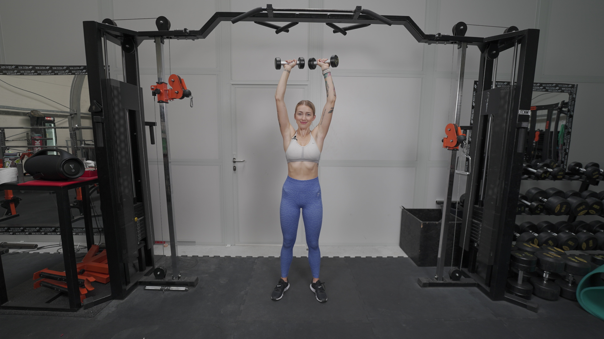
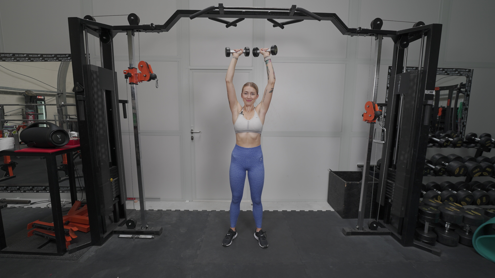

ARNOLDKI
 

1. W obie dłonie chwyć hantle, umieść je na wysokości swoich obojczyków. Hantle trzymaj tak, aby palce dłoni były skierowane w Twoją stronę (zrotuj nadgarstki do wewnątrz. Kciuki są skierowane na zewnątrz.). Stań na szerokość bioder.
2. Napnij brzuch i pośladki.
3. Rozpocznij ruch wyciskanie hantli nad głowę, odkręcając nadgarstki do zewnętrznej strony. Utrzymuj napięty brzuch i pośladki.
4. Gdy hantle znajdą się nad głową, trzymane w taki sposób, aby nadgarstek był skierowany na zewnątrz (kciuki są skierowane do wewnątrz), rozpocznij ruch opuszczania, ponownie powracając do pozycji nadgarstków zrotowanych do wewnątrz.